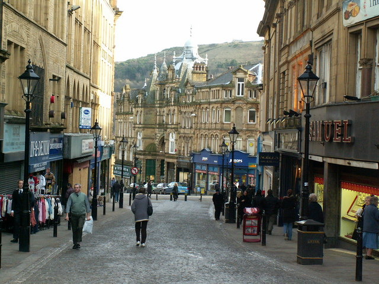

Find out more
Halifax is a large market town within the Metropolitan Borough of Calderdale,
in West Yorkshire, England, with a population of 88,056 in 2011.
It is well-known as a centre of England's woollen manufacture from the 15th century onward,
originally dealing through the Halifax Piece Hall.

LIVE - Boris Johnson elected prime minister
It’s 33C in London, 0.2% of the nation has spoken and a DUDE has lied his
way about bananas and condoms to high office, yet he is the new prime minister.
Halifax has been awarded the prestigious Purple Flag Award for several years
in a row, which recognises both great entertainment and hospitality.
The award is only given to towns and cities that meet or surpass standards
of excellence and Halifax definitely does that.
The West Yorkshire town is home to some amazing attractions including Eureka!
The National Children’s Museum and The Piece Hall – a grade I listed building
and the oldest remaining cloth hall in Britain, now a contemporary leisure,
retail, cultural and heritage destination.
Plus...and it's a big plus
Ed Sheeran - The world-famous singer-songwriter Ed Sheeran was born in 1991
in Halifax and has gone on to break world-records and win an insane amount of awards.
Despite moving away at a young age, the influential, record-breaking artist will
always have ties to West Yorkshire.
- Happy Valley Pride festival - 30 August 2019
- Rugby match, North vs South - 17 August 2019
- Town water fight - 1 August 2019